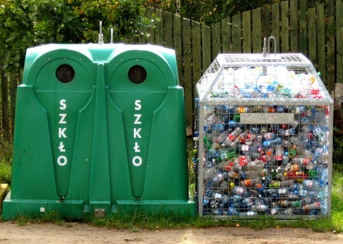
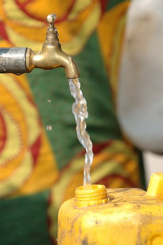
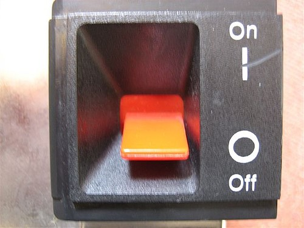
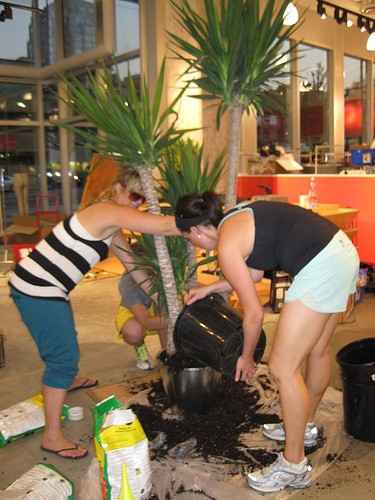
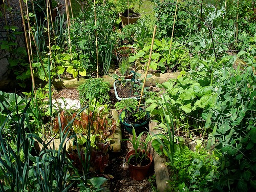
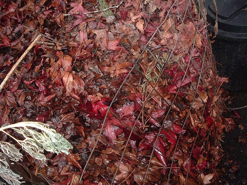
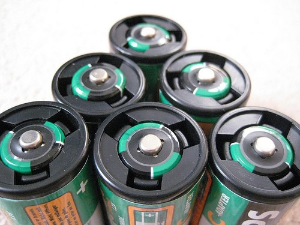
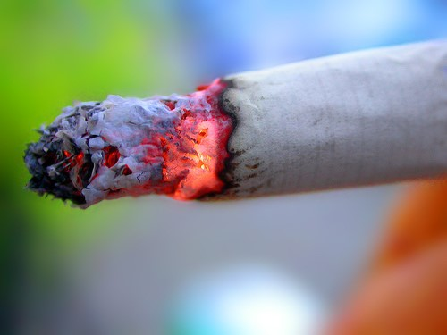
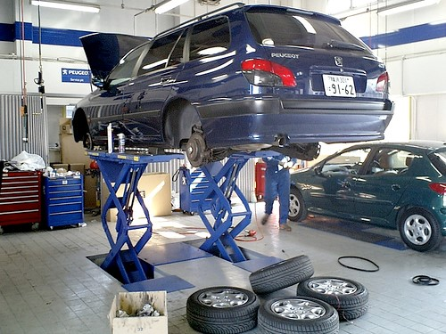
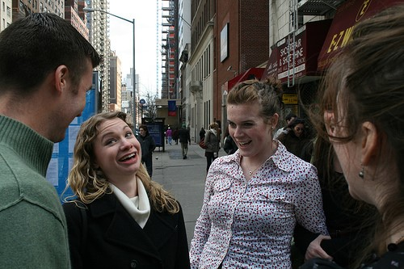

conservation in general
1. Recycling
- Recycle everything you can and try to buy reusable and biodegradable products as much as possible.
- Whether it is glass or paper, plastic or metal, all these materials can be re-used.
- Empty jars, wine bottles, broken glasses and absolutely any other item made of glass which is no longer useful should be recycled. It takes a million years for glass to decompose
- Also, old newspapers, paper wraps, cardboard, sheets of paper you no longer need should all reach the paper container and be sent in order to be recycled. Millions of trees will thank you for that.
- 
2. Reduce water consumption
- Water is life. Clean, fresh water tends to become more and more precious as time goes by and, if we do nothing to save it, in the not so far future, water will be more precious than gold.
- It is therefore crucial for us to do whatever they can in order to save it and to prevent water pollution.
- It is not a difficult task, just turn the tap off while you brush, reduce the number of baths and take showers instead, use the washing machine only when you can actually fill it with clothes.
- Used oil or paint should not be discarded into the drains as they will pollute the rivers and finally the seas.
- 
3. Reduce the use of electricity
- 
- All it takes is some attention from your part. Once you are done with an electric appliance, turn it off.
- You will save not only energy but also money from your electricity bill! Replace regular bulbs with energy saving light bulbs.
- If everyone did that, it would be like millions of cars would be removed from the road. Once you leave the office, physically turn off your computer and monitor. You will prolong their life and reduce electricity consumption in the process. Do that at home as well.
4.Plant a tree
- Trees are our source of oxygen and we cut them down instead of planting them
- If every person planted a tree, life would improve significantly.
- The air would be cleaner, the number of trees would get back to normal, you would have more shade for the hot summer days;
- pollution would be reduced along with global warming and green house effect.
- 
5.Grow vegetables
- The vegetables we eat today are grown with chemicals and pesticides.
- If you planted your own veggies without using the above mentioned “ingredients”,
- you will have organic food of excellent quality, beneficial for both your health and the environment as the land will be less intoxicated with chemicals.
- Another benefit is organic vegetables are more tasty so not only are you becoming healthier – you will also get to taste delicious bursts of flavour.
- 
6.Composting
- A few composting bins in the garden represent an excellent opportunity to avoid littering,
- At the same time being a reliable source of natural manure for your vegetable garden.
- Manure is not harmful for the environment and litter is reduced.
- 
7.Use rechargeable batteries
- Batteries are extremely dangerous for the environment and, unfortunately, only a fraction of these batteries gets to be recycled.
- The rest is thrown away, becoming a hazardous enemy of the environment.
- Two or three sets of rechargeable batteries along with a charger would prevent this from happening.
- The initial investment will definitely pay off shortly.
- 
8.Quit smoking
- It is needless to say how dangerous cigarettes are for your health.
- They are the cause of a large number of lethal diseases.
- When people stub out cigarettes, many do not throw it into a bin but on the ground which is just pure littering.
- In addition, they get to increase air pollution even more, affecting also those who do not smoke. It is not fair, is it?
- 
9.Maintain your car
- Cars are a very important source of pollution today and their number is incessantly increasing every year
- It is important to maintain your car in good condition.
- A car that has not been serviced regularly might dispel even more chemicals and harmful gases in the air just because you did not make time to have it checked.
- Regular maintenance will also increase the performances of your vehicle, so you only have to gain from this. Do not forget to inflate your tires regularly.
- 
10.Talk about it
- Discussing environmental protection with your friends and family members can really help.
- The more people are aware of these environment protection methods, the more chances we will have to make things better.
- Although simple, the above mentioned tricks and tips are extremely effective in the long run and not only, not to mention that they can be achieved with only little effort from our part.
- After all, we all live on the same planet and it is our duty to protect it in any way we can.
- 